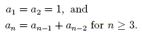

Introdução
Cython é uma linguagem de programação que torna escrever extensões em C para a linguagem Python tão fácil quanto o próprio Python. É uma linguagem de programação de alto nível, orientado a objetos, funcional e dinâmico. Sua principal característica é o suporte para as declarações de tipo estático. O código-fonte é traduzida em código C / C ++ , otimizado e compilado como módulos de extensão Python. Isso permite a execução de um programa muito rápido e forte integração com as bibliotecas externas de C, mantendo o programador em alta produção.
- com todos os principais compiladores(C e C++)
- para todas plataformas principais
- Em python 2.6 até python 3.1
O compilador Cython gera código em C que compila :
- Suporte para python 3.1 e acima esta em desenvolvimento
Actualmente Cython suporta a sintaxe do Python 2.6
Como instalar
> Digite o seguinte comando na linha de comandos para instalar o Cython.
sudo apt-get install cython
Isso irá instalar o Cython e o "python developement headers" ou cabeçalhos para desenvolvimento em Python na sua máquina.
Compilar código Python para C
Agora que tens cython instalado na sua maquina, vamos primeiramente testar a velocidade entre C e Python para conhecer a diferença em velocidade de execução e iremos compilar o nosso Código Cython para C e ver os beneficios que ela poderia trazer para nos.
Na linha de comandos cria um novo arquivo usando o editor de texto nano com o nome fib.py. Vamos criar um script em Python e C que ira retornar o enésimo elemento da seqüência de Fibonacci.
A formula para retornar o enésimo elemento da seqüência de Fibonacci
>Vamos criar um arquivo que irá armazenar código em Python.
alexjuca@alexjuca.github.io:~/Documents/BlogPostProject/Cython$ nano fib.py
> Digite o seguinte código e salva-o com a combinação das teclas Ctrl + O
def fib(n): if n == 0: return 0 elif n == 1: return 1 else: return fib(n-1) + fib(n-2) x = fib(30) print(x)
> Cria um novo arquivo fib.c que irá armazenar o código em C
alexjuca@alexjuca.github.io:~/Documents/BlogPostProject/Cython$ nano fib.c
> Digite o seguinte código e salva-o com a combinação das teclas Ctrl + O
#include < stdio.h> /* Prototipo */ int fib(int n); int main() { int f = fib(30); printf(" Fib: %d \n", f); return 0; } int fib(int n) { if (n == 0) { return 0; } else if (n == 1) { return 1; } else { return fib(n-1) + fib(n-2); } }
Bem temos tudo que precisamos para comparar a velocidade entre Python e C. Vamos compilar o código em C usando gcc (GNU C Compiler).
> Digite os seguintes comandos para compilar o código em C
alexjuca@alexjuca.github.io:~/Documents/BlogPostProject/Cython$ gcc -g -o fib fib.c
O gcc compilou o nosso código e criou em ficheiro binário executável com o nome fib.
> Digite o comando ls para listar os ficheiros do Direitório. Verifica se tens estes ficheiros abaixo no seu diretório
alexjuca@alexjuca.github.io:~/Documents/BlogPostProject/Cython$ ls
fib fib.c fib.py
Iremos executar o ficheiro executável com o progama time para saber o tempo que o cpu leva para terminar o processamento do programma. Lembra que o programa irá calcular o enésimo elemento da seqüência de Fibonacci e imprimir-la na tela
> Execute o ficheiro executável usando time
alexjuca@alexjuca.github.io:~/Documents/BlogPostProject/Cython$ time ./fib Fib: 832040 real 0m0.021s user 0m0.016s sys 0m0.000s
Prontos o código foi executado com sucesso e retornou o valor da seqüência de fibonnaci e tambem o tempo de execução. Levou 0.021s na minha maquina, é possível que ele retorne um tempo diferente na sua maquina por causa do CPU e OS que são diferentes (Na verdade existem várias coisas que podem influenciar os resultados, incluindo os processos, programas abertos e até a sua respiração, ok menos a respiração) A maquina que usei para testes utiliza um processador AMD Athlon II X3 e tem Ubuntu 14.04 como Sistema operativo.
Vamos executar o próximo script em Python. Digite o seguinte código na linha de comandos no mesmo diretório onde coloucaste os ficheiros que criamos anteriormente.
> Executa o código em python usando time
alexjuca@alexjuca.github.io:~/Documents/BlogPostProject/Cython$ time python fib.py 832040 real 0m0.740s user 0m0.700s sys 0m0.008s
Aí cara, é obvio que o programa escrito em C é muito mais rápido que o programa escrito Python2.7. C é 35 vezes mais rápido neste algoritmo que o Python (740 / 21 = 35.). È isso que esperamos de uma linguagem compilada como C que foi criado para ser eficiente e rápido. Mais o importante aqui não é mostrar que C é mais rápido, mas queremos saber como o uso de Cython pode melhorar o desempenho dos nossos programas e facilitar o desenvolvimento de software usando o sintaxe simples do Python e a velocidade e eficiencia da linguagen C.
Vamos criar um novo arquivo que irá armazenar código em Cython.
alexjuca@alexjuca.github.io:~/Documents/BlogPostProject/Cython$ nano cyfib.pyx
> Digite o seguinte código e salva-o com a combinação das teclas Ctrl + O
cdef fib(int n): if n == 0: return 0 elif n == 1: return 1 else: return fib(n-1) + fib(n-2) if __name__ == '__main__': print(x) fib(30)
O código em Cython aparece identico a código em Python, mas observa que declaramos a função cdef e tambem declaramos seu parâmetro n como inteiro. Cython usa essas informações para criar código otimizados. Nos sabemos que estamos falando de um inteiro e tambem conhecemos o scopo dos dados dentro do programa e assim possibilita o armazenamento de dados na pilha (stack).
Compila o código Cython para C usando os seguintes comandos
> compila o código Cython para C
alexjuca@alexjuca.github.io:~/Documents/BlogPostProject/Cython$ cython --embed cyfib.pyx
Usamos o compilador do Cython para criar um ficheiro que contém a tradução do código Cython para C e criou um ficheiro com nome cyfib.c Usa o comando ls para visualizar os ficheiros do diretório
> Exibe os ficheiros do diretório usando ls
alexjuca@alexjuca.github.io:~/Documents/BlogPostProject/Cython$ ls
fib fib.c fib.py cyfib.pyx cyfib.c
Bom agora vamos usa o gcc para compilar o ficheiro cyfib.c em executável
> Compila o ficheiro cyfib.c usando os seguintes comandos
alexjuca@alexjuca.github.io:~/Documents/BlogPostProject/Cython$ gcc -I /usr/include/python2.7 \ -o cyfib cyfib.c -lpython2.7 -lpthread -lm -lutil -ldl
> Exibe os ficheiros do diretório usando ls
alexjuca@alexjuca.github.io:~/Documents/BlogPostProject/Cython$ ls
cyfib fib fib.c fib.py cyfib.pyx cyfib.c
Iremos executar o ficheiro executável cyfib com o progama time para saber o tempo que o cpu leva para terminar o processamento do programma.
> Executa o ficheiro executável cyfib usando time
alexjuca@alexjuca.github.io:~/Documents/BlogPostProject/Cython$time ./cyfib 832040 real 0m0.117s user 0m0.096s sys 0m0.004s
Ótimo, o programa escrito em Cython e convertido para C e finalmente compilado em executável retornou o resultado depois de 0.117s. Isso é muito bom. Mostrando que é 6 vezes mais rápida (740 / 117 = 6.32) do que código em Python. È possível aumentar ainda mais a eficiencia e rapizés do programa usando algumas otimizações.
Alternativas
Este tipo de ligação de idioma pode também ser conseguida através de Swig. Onde o Cython brilha é no tipo de coerção e que a execução directa oferece. Por exemplo, em Swig você precisa escrever um monte de funções tipo de invólucro para coagir entre as diferentes línguagens. Você também vai precisa escrever funções "wrapper" para lidar com mais estruturas de dados complexas. Cython faz isso para você por entender os tipos! Não estou dizer que o swig é ruim, mas é muito generalizada, uma vez que suporta tantas linguagens como Java, Go, etc., tirando todo o código da placa de caldeira necessário. Cython é puramente projetado para Python.
Conclusão
Aprendemos que podemos usar Cython para escrever programas escritos em Python que podem ser executadas mais rápidas mas será que tem outras razões para usar-la? Sim existem.
- Não trouca de linguagem só para ter codigo mais rápido
- acelerar módulos Python existentes. concentrar em otimizações, não em reescrevendo código!
- Não trouca de linguagem só para ter codigo mais rápido
- Envolver Bibliotecas em C usando Python